Photo Album
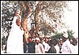
Gov Adamu addressing PDP party supporters
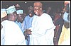
Gov Adamu being received on arrival from Saudi Arabia
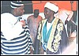
Governor Adamu discussing with the Zhe Migili
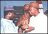
Gov Adamu discussing with the Chief of Loko
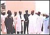
Governor Adamu visits Akwanga General hospital
Gov Adamu and Deputy Governor Gye-Wado
Governor Adamu performing a "Farmer's Dance"
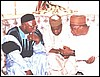
Gov Adamu with former Head of State General A. Abubakar
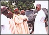
Gov Adamu waiting at Bassa
Gov Adamu with V-P Atiku
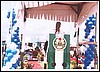
Gov Adamu speaking a rally
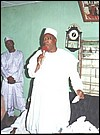
Governor Adamu addressing an audience
The governor presenting the 2000 Appropriation Bill
Governor Adamu with the Ohimege Opanda
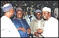
Governor Adamu with Governor of Plateau State and others
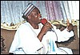
Gov Adamu speaking
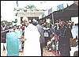
Governor Adamu addressing supporters
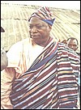
Governor Adamu dressed in Tiv attire
Generated with Arles Image Web Page Creator